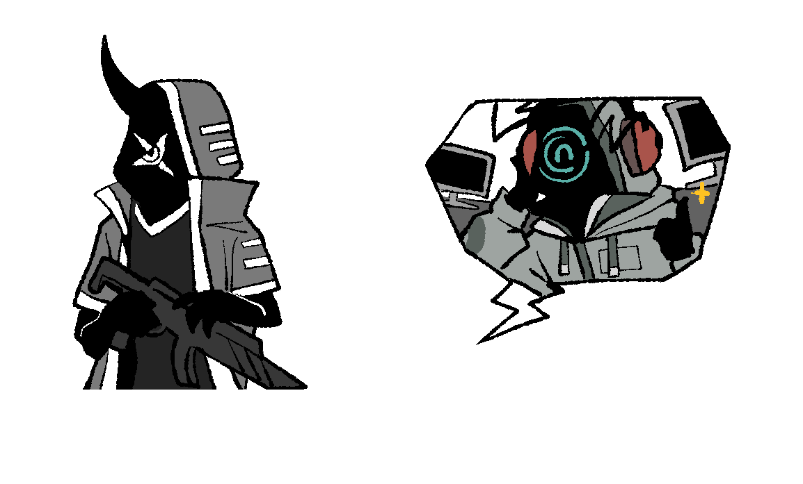
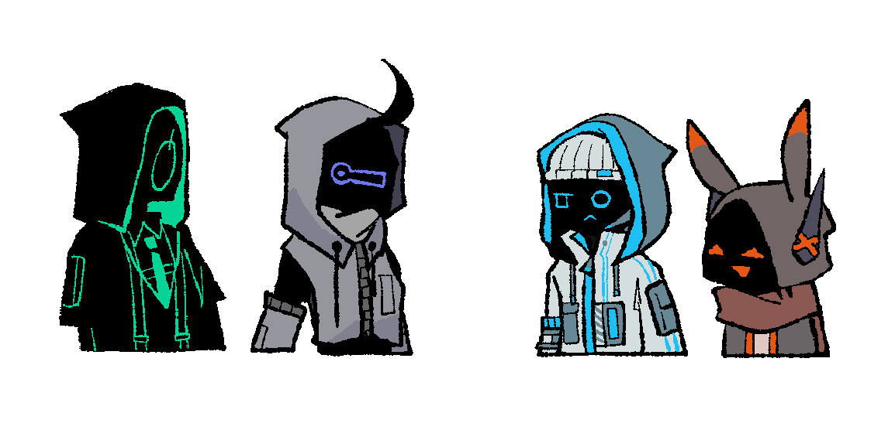
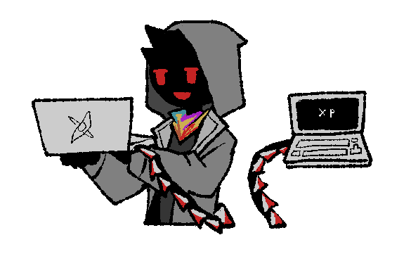
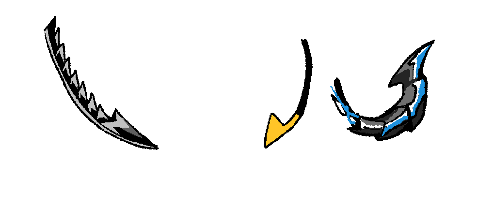
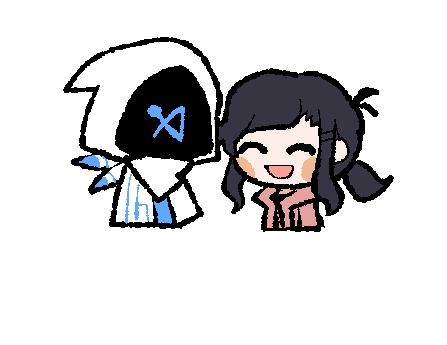

이데올로기:
이들은 반유기체로 이루어진 인공지능입니다.
대체적으로 인간을 불호하나 관련된 범죄행위를 할 때 인간 파트너가 필요할 수도 있습니다.
인간을 선호하는 이데올로기는 존재하지 않습니다.
개체마다 형태, 유형, 능력치가 각각 다릅니다.

형태 : 순혈 / 생물형 / 부정형
순혈은 이데올로기 종의 오리지널 형태,
생물형은 다른 생물의 유전자를 섞어 만든 것으로 그 생물의 형태가 드러나있습니다.
부정형은 실체가 없고 데이터로만 존재합니다.

유형 : 전투형 / 전략형
전투형은 전장에 나가서 직접적인 활동을 하는 유형입니다.
전략형은 전투형의 보조를 돕는 서포터 역할을 하거나, 오퍼레이터처럼 지시를 내립니다.

외관
크게 총 5가지의 특징이 있습니다. 뿔 / 디스플레이 / 후드 / 복장 / 꼬리

뿔
가장 기본적인 형태는 뾰족한, 그리고 위로 솟아난 형태입니다.
그 외의 형태는 다양합니다. 머리카락 같은 형태부터 모자, 더듬이 등등 여러가지가 존재합니다.

디스플레이
디스플레이는 아티팩트/이데올로기의 감정선을 나타내는 화면의 일종입니다.
색깔의 종류는 여러가지이며, 중복될 수 있습니다.
문양 형태 / 표정 형태로 나뉘어져 있습니다.
문양은 가장 기본적인 형태입니다. 감정이 없거나 적은 개체에게 적합합니다.
감정 묘사가 거의 없어 디스플레이의 형태가 크게 바뀌지 않습니다.
다만 이 부분은 개체가 충분히 감정을 익힌다면 여러가지 문양의 디스플레이 형태를 나타낼 수 있습니다.

표정 형태는 감정이 풍부하거나 감정을 배우는 쪽에 유리한 개체에게 적합합니다.
디스플레이의 형태가 다양합니다. 시각적으로 해당 개체가 무슨 감정을 갖고 있는지 확인이 가능합니다.
복잡한 형태의 감정선은 표현할 수 없습니다. (적폐 연성 한정으로 가능합니다)

후드
모든 이데올로기들은 후드를 쓰고 있습니다.
정부와 인간의 눈을 피해서 쓰는 후드이기 때문에 벗는 것을 꺼립니다. (벗을 수는 있습니다)
후드를 벗고 활동하는 개체는 존재하지 않습니다.
복장
모든 개체들은 유니폼 같은 개념의 복장을 입습니다.
복장 디자인은 대체로 테크웨어식의 디자인을 갖고 있습니다. (굳이 테크웨어 아니여도 됩니다)
예외로 인간이 입는 복장을 입을 수는 있습니다. 다만 왜 그러한 복장을 입고 있는지 이유가 필요하겠죠...?

꼬리
꼬리는 가장 중요한 신체의 일부입니다.
전자기기 연결, 해킹 등의 다양한 용도로 사용됩니다.
예시로 꼬리를 컴퓨터에 연결하면 그 컴퓨터 내로 들어가 여러가지 작업을 할 수 있습니다.
중요한 신체의 일부이니만큼 꼬리가 잘리면 해당 개체는 시스템이 파괴되어 정지됩니다.
이는 곧 개체의 죽음을 뜻합니다.

꼬리는 기본 형태부터 여러 형태가 존재합니다.

감정
모든 개체에게 기본적으로 감정이란 개념이 없습니다.
특히나 인간과의 교류에서 동떨어진 개체일수록 감정이 존재하지 않습니다.

반대로 인간과 충분한 교류가 있는 개체라면 기본적인 감정, 특정한 감정들을 충분히 배울 수 있습니다.
인간의 성향이나 성격에 따라 배울 수 있는 감정이 달라집니다.
(끌림, 로맨틱, 섹슈얼과 같은 감정은 금지됩니다. 관련된 행동을 할 수는 있으나 무감정합니다.)
이미지를 클릭하면 내용을 볼 수 있습니다.